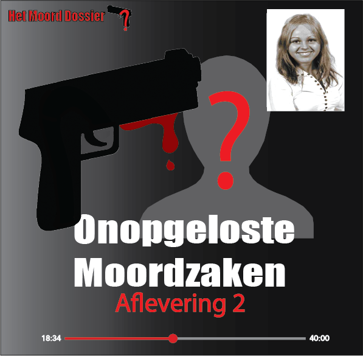
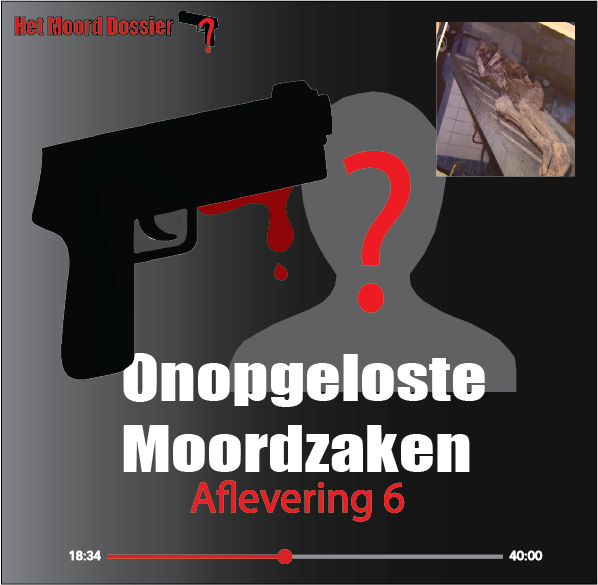

Afleveringen
Aflevering 1: De onverklaarde verdwijning van Cassandra van Schaijk

In de vroege uren van zaterdag 24 maart 2007 verdwijnt de 17-jarige Cassandra van Schaijk. Na een avond stappen in discotheek mist ze net aan haar laatste bus om 03.45 uur. Om 04.00 uur onder invloed van drank en vermoedelijk drugs wordt ze voor het laatst gezien op het lege busplein van Almere-Stad, waar getuigen haar in gesprek zien met twee onbekende mannen. Cassandra komt nooit thuis en word opgegeven als vermist waarna er na weken later, op 14 april haar lichaam wordt gevonden in de ijskoude Noorderplassen. Tot de dag van vandaag blijven er vragen over deze zaak. Wat gebeurde er die nacht? Hoe is ze daar beland, ver van huis waar je te voet niet kunt komen? Geen duidelijke doodsoorzaak. Geen antwoorden en alleen maar vragen. Sluit je aan bij ons onderzoek naar mogelijke oplossingen. Stap met ons mee in dit aangrijpende verhaal en vergeet jouw gedachtes zeker niet te delen met ons.
Aflevering 2: De onverwachte moord op sekswerker Betty
Bernadett, ook wel Betty genoemd, wordt op 20 Februari 2009 helemaal onder het bloed dood aangetroffen in een peeskamer op de Oudezijds Achterburgwal. Ze was sekswerker en zat de laatste maanden totaal niet lekker in haar vel. Ze was 3 maanden geleden bevallen en het kindje is bij haar weggenomen en naar een pleeggezin gebracht. Collega’s van Betty vonden het die avond verdacht stil op haar kamer. Eerst dachten ze dat ze al naar huis was gegaan, omdat ze er geen zin in had of een slechte dag had gehad. Na een tijdje luisterde de collega’s toch naar hun onderbuikgevoel en gingen kijken op de kamer van Bernadett. Ze troffen Betty badend in het bloed aan. Tot de dag van vandaag weten we niet wat hier gebeurd is. Wat zou er vooraf gebeurd kunnen zijn? Wie is de moordenaar? Was het een klant of een collega? In de podcast hoor je meer. Kun jij deze moord oplossen?
Aflevering 3: Dood in de Beukstraat

Op 30 december 1989 tussen kerst en oud en nieuw wordt er een gruwelijk ontdekking gedaan in een woning aan de Beukstraat in Utrecht. Robert Obermeijer, 26 jaar oud wordt dood aangetroffen in het huis van ze zus. Hij is gewurgd. Terwijl de politie in eerste instantie denkt dat er sprake is van roofmoord, wijze andere aanwijzingen ergens anders op… Robert had twee partners, Willem en Peter. Was één van hen hier verantwoordelijk voor of waren er andere die hierbij betrokken waren. Zowel Peter als Willem wilde geen verklaring afleggen bij de politie, dus kende Robert zijn moordenaar wel? Terwijl de vragen maar toenemen, blijft de dader onvindbaar. Door alle onduidelijkheden en gebrek aan getuigen blijft het oplossen van deze zaak moeilijk voor de politie. De enige getuigenis komt van buurtbewoners die Robert die middag nog om 16.00 uur op zijn fiets zagen en daarna nooit meer iets van hem hebben vernomen. Luister naar dit verhaal vol tegenstrijdige aanwijzingen en onduidelijkheden.
Aflevering 4: De zoektocht naar Manon Seijkens

Het was dertig graden en heerlijk weer buiten op Donderdag 10 Augustus1995. Rond 15:30 vertrok de 8-jarige Manon Seijkens naar buiten om in het parkje te gaan spelen zoals altijd. Ze moest voor etenstijd thuis zijn, want ze zouden lekker patat eten die dag. Toen ze om 20:19 nog niet terug was belde haar moeder de politie op. Grote zoekacties hebben plaats gevonden, maar ze hebben Manon niet kunnen vinden. Weken en maanden gingen voorbij zonder enig spoor van het 8-jarige meisje. Zou ze uiteindelijk gevonden zijn en wie is de dader? Meer hoor je in de podcast over de zoektocht naar Manon Seijkens.
Aflevering 5: Het mysterie van de kermisnacht

Dinsdagavond 29 augustus 1989, de dag dat Wies Hensen was verdwenen na haar bezoek aan de kermis in Budel. Ze stond bekend als een lieve vrouw die er altijd was voor anderen en nooit conflicten had. Uit getuigen bleek dat ze die avond op de kermis gezelschap had van twee of drie mannen die onbekend waren in Budel. De dag erna werd Wies Hensen dood, naakt en verstikt aangetroffen in een sloot in Dommelen. Was Wies echt zo een onschuldige en lieve vrouw, of zit er een dieper geheim achter haar moord? Dit onopgeloste mysterie is nog steeds bezig, dus de vraag blijft: Wie is de dader? En wat is er precies gebeurd? Luister het verhaal verder en brainstorm met ons mee in deze achterdochtige zoektocht naar antwoorden.
Aflevering 6: Het lijk in het tapijt: wie lag in de kelder?
11 januari 1982, een schrikwekkende ontdekking in een oud en verlaten pand aan de Ouderzijds Achterburgwal in Amsterdam. De kelder van dit pand lag half in puin, maar.... niet alleen vuil en stof lag er. Collega's vonden een gemummificeerd lichaam dat was opgerold in een verouderd tapijt en gewikkeld met een tuinslang omheen. Het lijk bleek een tattoo te hebben met de tekst: "Der Teufel Soll Mein Führer Sein". Toch heeft de politie de identiteit van dit lijk tot nu toe niet kunnen achterhalen. Wie is het slachtoffer? Wat is er gebeurd in de kelder van Amsterdam? En het belangrijkste, wie is de dader? Duik mee in dit mysterieuze verhaal vol verrassingen en vergeet niet om ook jouw ideeën met ons te delen.